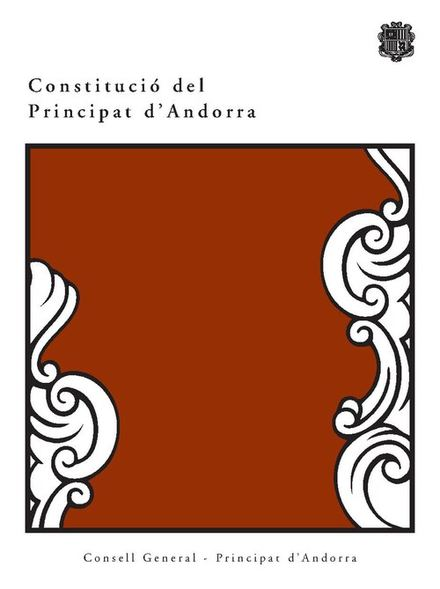

1993La ConstitucióContemporània
74,2 % de sí: la Constitució que va convertir Andorra en un Estat de dret
Context històric
El Consell General va adoptar el projecte de Constitució el 2 de febrer de 1993, després de negociar-lo amb els serveis dels coprínceps. El 14 de març es va sotmetre a referèndum: va participar-hi el 75,7 % del cens i el 74,2 % dels vots vàlids va ser favorable. Els coprínceps, François Mitterrand i el bisbe d'Urgell Joan Martí Alanís, van sancionar el text el 28 d'abril, i va entrar en vigor el 4 de maig. El 28 de juliol Andorra ingressava a l'ONU.
L'article 1 defineix Andorra com un Estat independent, de Dret, democràtic i social, atribueix la sobirania al poble andorrà i fixa el Coprincipat parlamentari com a règim polític. Els coprínceps, el bisbe d'Urgell i el president de la República Francesa, són conjuntament i indivisa el Cap de l'Estat (art. 43). El català és la llengua oficial (art. 2.1) i la pena de mort queda prohibida (art. 8.3). El procés arrencava de les consultes de 1977-1978 i del decret de 1981.
Els textos consultats apunten diversos factors —la pressió exterior, el context posterior al Concili Vaticà II, la maduresa de les institucions locals—, però no els jerarquitzen; és una qüestió oberta.
Dades, lectures i dubtes
- Dada
- Dates (2 de febrer, 14 de març, 28 d'abril, 4 de maig, 28 de juliol), resultats del referèndum i articles 1, 2.1, 8.3 i 43 del text oficial.
- Qüestió oberta
- El pes dels factors del procés (pressió exterior, context posterior al Concili Vaticà II, maduresa de les institucions locals): els textos els enumeren sense jerarquitzar-los.
Multimèdia

Fonts
- Constitució del Principat d'Andorra (text oficial, PDF del Consell General)
- Enciclopèdia Catalana, «Constitució d'Andorra»
- Enciclopèdia Catalana, «Òscar Ribas i Reig»
- NacióDigital, «El cap de govern d'Andorra fa el seu discurs a l'ONU en català» (2022; recorda el discurs de Ribas del 28-07-1993)
- Arxiu Comunal d'Andorra la Vella, Document del mes núm. 42 (2021)
- Universalis, «4 mai 1993, promulgation de la première constitution»
- Viquipèdia, «Referèndum constitucional d'Andorra de 1993»